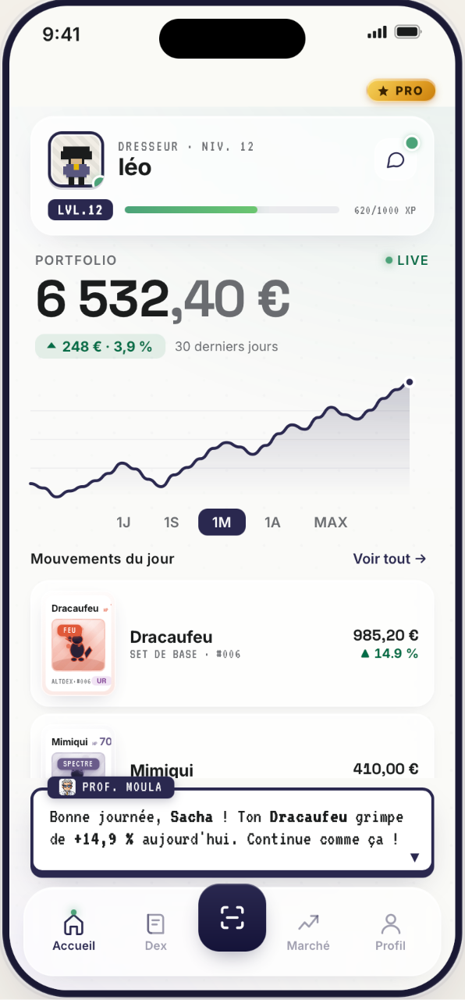
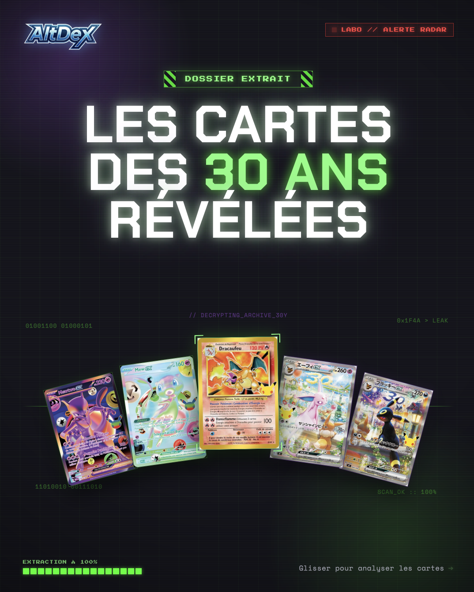
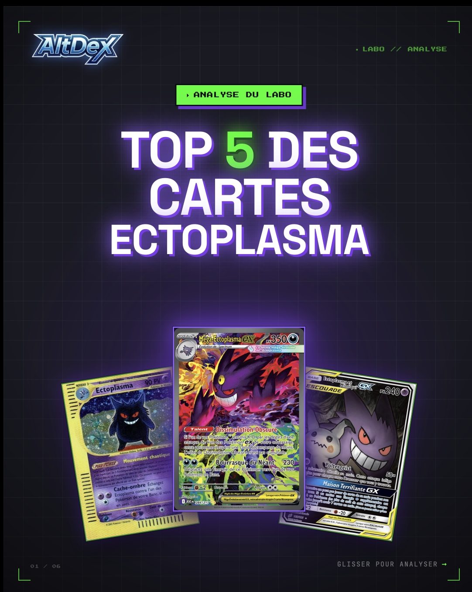
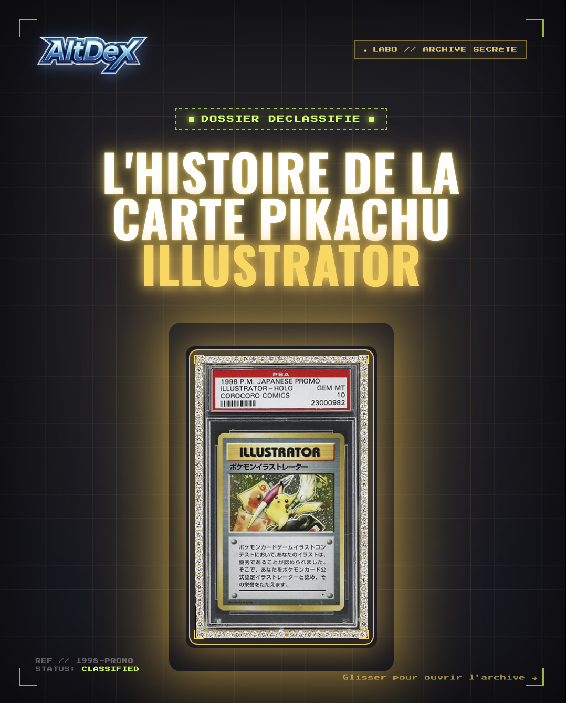

Les cartes des 30 ans révélées. On décrypte le coffret anniversaire et les cartes qui s'arrachent déjà.
Voir le post →Scan AltDex
Pointe ton appareil photo : la carte est reconnue et ajoutée à ton portefeuille en une seconde. Ton Dex d'actifs.
TCG × Investissement × Gaming
Scanne tes cartes, suis leur cote en temps réel et fais fructifier ta collection comme un vrai portefeuille — avec l'XP, le Dex et le Professeur Moula en bonus.
▸ Essaie la démo en ligne →
Le concept
Les cartes à collectionner sont devenues de vrais actifs : leur valeur monte, descend, se cote. AltDeX transforme cette réalité financière en aventure. Chaque carte scannée rejoint ton portefeuille et ton Dex. Chaque bon move te fait gagner de l'XP. Sérieux comme une appli de bourse, addictif comme un RPG.
Des cartes que tu aimes, qui prennent de la valeur.
Niveaux, XP, Dex à compléter, un prof qui te guide.
Fonctionnalités
Pointe ton appareil photo : la carte est reconnue et ajoutée à ton portefeuille en une seconde. Ton Dex d'actifs.
Prix synchronisés avec Cardmarket, eBay et les marketplaces. La valeur de ta collection, minute par minute.
Volatilité, volume d'échange, capitalisation. Les indicateurs d'un trader, appliqués à tes cartes.
Estime l'état et le grade de tes cartes pour connaître leur vraie valeur marchande — du brut au PSA 10.
Ton assistant maison. Il analyse tes cartes, donne son avis « achat / garde / vend » et commente tes perfs.
Complète ton Dex, monte de niveau, débloque des paliers. Chaque carte rapproche du 100 %.
Comment ça marche
Dégaine l'AltDex et scanne ta carte. Reconnaissance instantanée, ajout au Dex.
Sa valeur s'affiche en temps réel, avec courbe, variation et indicateurs.
Le Professeur Moula t'oriente : potentiel, risque, et le bon moment pour agir.
Monte de niveau, complète ton Dex et regarde ton portefeuille grandir.
Le Professeur Moula
Mi-prof de labo, mi-analyste financier. Moula lit tes cartes, te félicite quand ça grimpe et te prévient quand ça surchauffe. Le ton d'un jeu, la rigueur d'un conseiller.
La démo
Quelques écrans de l'application. La meilleure façon de comprendre AltDeX, c'est de l'essayer.
Sur nos réseaux
Décryptages de cartes, classements et archives secrètes du Labo. On partage nos analyses TCG au quotidien — rejoins la communauté.

CarrouselLes cartes des 30 ans révélées. On décrypte le coffret anniversaire et les cartes qui s'arrachent déjà.
Voir le post →
CarrouselTop 5 des cartes Ectoplasma. Du Ectoplasma Skyridge à la Méga-Ectoplasma ex : le classement du Labo.
Voir le post →
CarrouselL'histoire de la carte Pikachu Illustrator. L'une des cartes les plus rares au monde, déclassifiée.
Voir le post →Le guide
Le TCG Pokémon n'est plus seulement un jeu de cartes à collectionner : c'est devenu un véritable marché, avec ses cotes, sa volatilité et ses cartes vedettes. Voici comment une application d'investissement TCG comme AltDeX t'aide à comprendre, suivre et faire fructifier ta collection.
En une vingtaine d'années, les cartes Pokémon sont passées du fond de cour de récréation aux ventes aux enchères médiatisées. Certaines cartes rares — comme un Dracaufeu de première édition en parfait état — atteignent désormais des prix à cinq ou six chiffres.
Ce qui était un loisir est devenu une classe d'actifs alternative à part entière. Comme une action ou une crypto, une carte a un prix de marché qui évolue selon l'offre et la demande, un volume d'échange et une volatilité. Les éditions limitées, les cartes promotionnelles et les sorties de nouveaux sets créent des cycles que les collectionneurs avertis apprennent à lire.
Le marché des cartes à collectionner (TCG, pour Trading Card Game) s'est structuré autour de places de marché internationales et d'organismes de gradation reconnus. Résultat : suivre la valeur d'une collection demande aujourd'hui les mêmes réflexes qu'un petit portefeuille d'investissement.
Tenir sa collection à jour dans un tableur, comparer les prix sur plusieurs sites, vérifier l'état de chaque carte… c'est vite ingérable. Une application d'investissement TCG centralise tout au même endroit et transforme une corvée en jeu.
C'est exactement la promesse d'AltDeX : la rigueur d'une appli de bourse et le plaisir d'un RPG. Tu scannes une carte, elle rejoint ton portefeuille et ton Dex, et le Professeur Moula t'explique en langage humain s'il vaut mieux garder, vendre ou renforcer.
La cote d'une carte Pokémon n'est pas un chiffre figé : elle bouge au gré des ventes réelles. Un tournoi qui remet une carte au goût du jour, une rupture de stock sur un booster, l'annonce d'une réimpression… et le prix s'ajuste en quelques heures.
AltDeX synchronise les prix avec des places de marché comme Cardmarket, eBay et les principales marketplaces, puis les agrège en une cote lisible. Tu obtiens une courbe de prix, une variation sur la journée et des repères de volume d'échange — de quoi repérer les hausses, les pics de volume et les opportunités avant qu'elles ne passent.
« Suivre la cote en temps réel, c'est arrêter de vendre trop tôt — ou d'acheter au plus haut. »
— L'esprit AltDeX
L'objectif n'est pas de transformer chaque collectionneur en spéculateur, mais de donner à chacun les informations dont disposent déjà les acheteurs professionnels. Connaître la valeur réelle de ses cartes, c'est décider en connaissance de cause.
Deux exemplaires de la même carte peuvent valoir du simple au centuple. Trois facteurs principaux expliquent l'écart.
AltDeX t'aide à estimer l'état et le potentiel de gradation de tes cartes avant de te lancer. Savoir si une carte mérite d'être envoyée en gradation PSA — du brut au PSA 10 — change radicalement le calcul de sa valeur marchande.
Pas besoin d'un gros budget pour commencer. Quelques principes simples évitent les erreurs classiques du collectionneur-investisseur débutant :
C'est précisément le rôle d'AltDeX : te donner les bons réflexes dès le départ, sans jargon, et faire de chaque scan de carte une nouvelle étape dans ton aventure de dresseur-investisseur.
Comme tout actif de collection, les cartes Pokémon peuvent prendre comme perdre de la valeur. Les cartes rares en excellent état, gradées et issues d'éditions recherchées ont historiquement bien tenu, mais aucun rendement n'est garanti. L'intérêt d'une application d'investissement TCG est justement de suivre la cote réelle pour décider sur des données, pas sur des rumeurs.
La valeur dépend de la rareté, de l'état et de la gradation. AltDeX scanne ta carte, l'identifie et affiche sa cote agrégée depuis les principales marketplaces (Cardmarket, eBay…), avec sa courbe de prix et sa variation récente.
La gradation est l'évaluation officielle de l'état d'une carte par un organisme indépendant comme PSA, sur une échelle allant jusqu'à 10. Une carte certifiée PSA 10 est authentifiée et scellée, ce qui rassure les acheteurs et fait souvent grimper sa valeur bien au-dessus d'une carte brute identique.
Tu peux scanner tes cartes, suivre la cote et constituer ton portefeuille dès le téléchargement. Tu peux aussi essayer la démo en ligne sans rien installer pour découvrir l'expérience.
Le blog
Sorties événements, mouvements du marché et histoires de cartes cultes. On décrypte l'actu du TCG Pokémon, sans jargon.
Trois décennies de Pokémon, un coffret anniversaire et une pluie de cartes spéciales. On fait le point sur ce qu'il faut absolument savoir avant la sortie — et sur les cartes qui pourraient bien s'arracher dès le premier jour.
Qui grimpe, qui chauffe, qui décolle ? Notre tour d'horizon hebdomadaire des cartes qui prennent le plus de valeur, avec les chiffres relevés sur les principales marketplaces et l'analyse du Prof. Moula.
L'une des cartes les plus convoitées de l'ère Neo : le Lugia Crystal. Retour sur sa rareté, son design holographique unique et les raisons pour lesquelles les collectionneurs se l'arrachent encore aujourd'hui.
Prêt à jouer ?
Télécharge AltDeX et transforme tes cartes en un jeu où chaque niveau a de la valeur.
Bientôt disponible
▸ Essaie la démo en ligne →